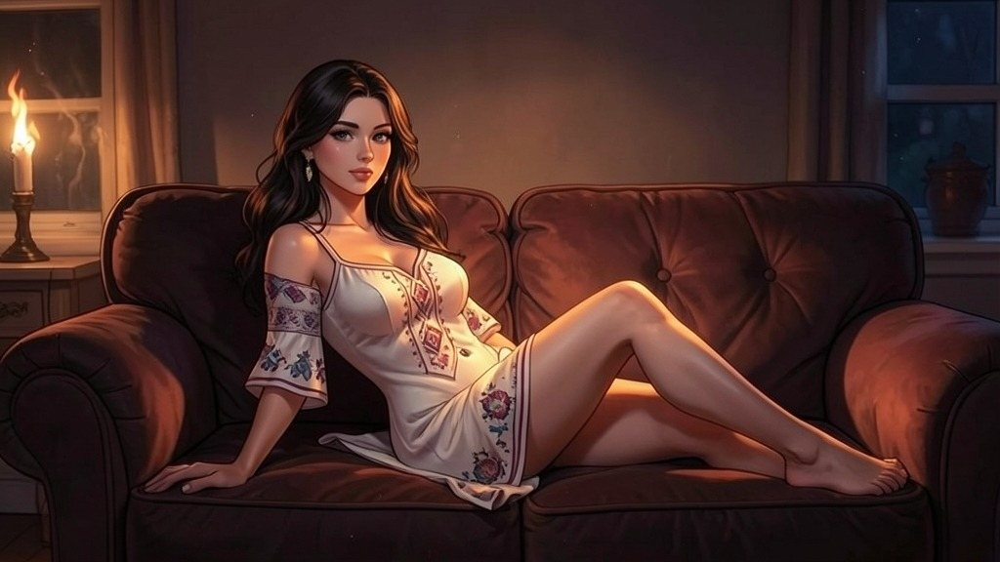

Поглавље 19: Хладно осветљење
Página individual del capítulo con lectura y ejercicios.

Након интензивног љубавног чина, Луис и Наташа леже у кревету, осећајући се опуштено и блиско. Наташа устаје и одлази у кухињу, враћајући се са две чашице сладоледа.
"Ево, Луис," каже она, пружајући му једну чашицу. "Ово ће нас охладити."
Луис се осмехне и узима сладолед. "Хвала, Наташа. Ти си најбоља."
Док једу, Наташа почиње да размишља гласно, покушавајући да повеже све делове мистерије. Њен ум је бриљантан, а Луис je слуша пуним пажње.
"Дакле, ево шта знамо до сада," почиње Наташа. "Час дивљака je древни феномен који се дешава сваке хиљаду година. Када дође, град постаје хаотичан, а људи губе контролу. Али постоји начин да се то заустави – кроз магично камење и митолошко чудовиште, Змај Огњени Вук."
Луис кима, слушајући је пажљиво.
Наташа наставља: "Имамо мапу са пет места где су камења. До сада смо пронашли једно на Калемегдану. Али сада знамо да су и друге стране заинтересоване за ову моћ. Рускиње су агенти руских тајних служби, а Софија, изгледа, ради за Американце. Обе стране желе да искористе Час дивљака за своје циљеве."
Луис додаје: "А Софија оставља камења на местима где их ми проналазимо. Можда нас мами у замку."
Наташа кима. "Тачно. Али зашто? Можда жели да контролише камења преко нас. Или можда покушава да нас искористи да јој донесемо камења."
Луис се замисли. "Шта ако Софија жели да заустави Час дивљака, али на свој начин? Можда жели да искористи моћ камења за себе."
Наташа уздахне. "Могуће. Али ми морамо да осигурамо да се Час дивљака заустави на прави начин. Не можемо дозволити да било ко искористи ову моћ за зло."
Луис je гледа пуним поштовања. "Ти си невероватна, Наташа. Твоја логика je импресивна."
Наташа се осмехне. "Хвала, Луис. Али морамо да наставимо да радимо заједно. Једино тако можемо заштити Београд."
Луис кима. "Тачно. Идемо на следеће место сутра. Али за сада, хајде да уживамо у овом тренутку."
Наташа му прилази и љуби га. "Ти си мој, Луис. И заједно ћемо заштити овај град."